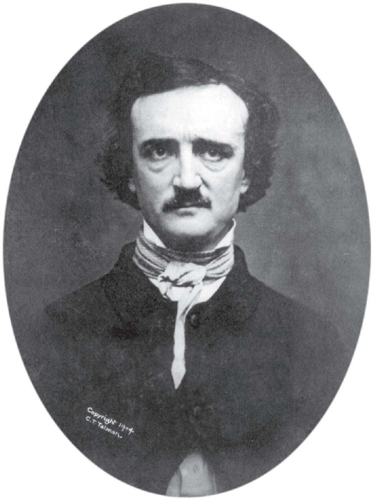
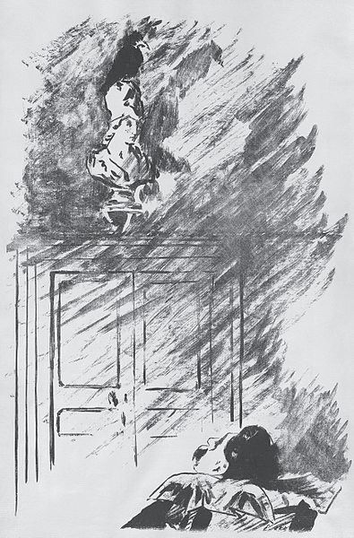
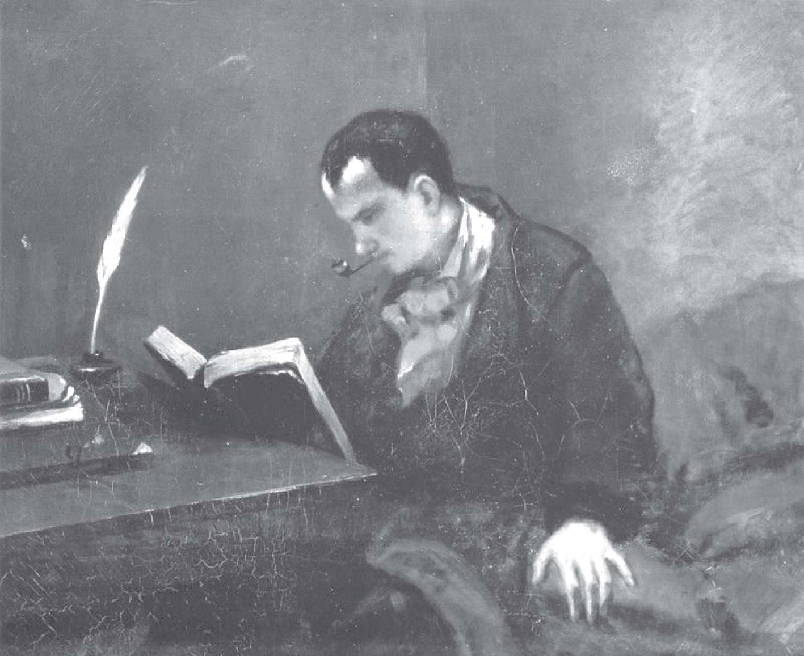
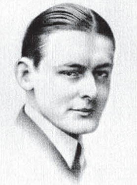
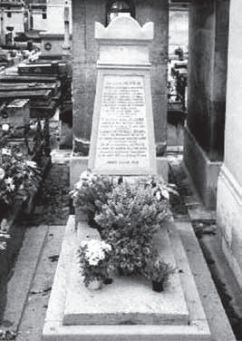
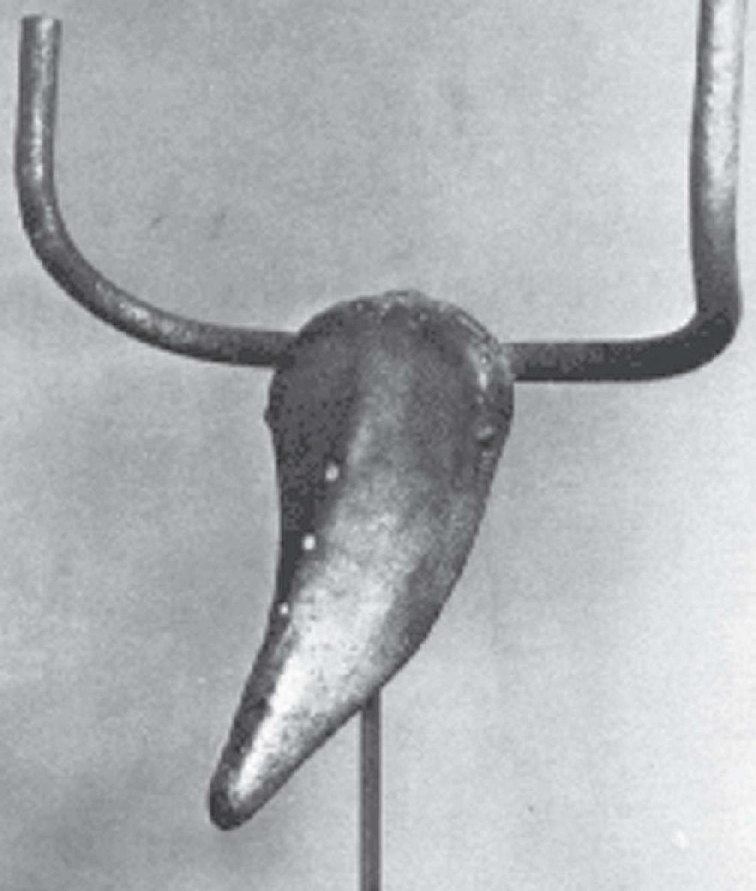
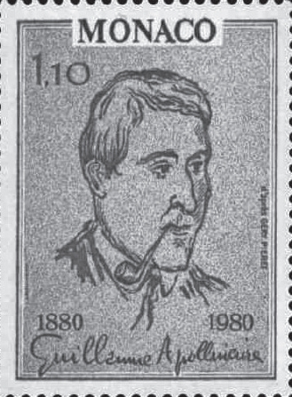
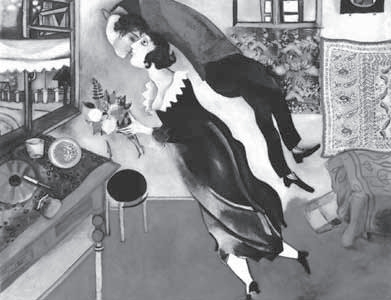
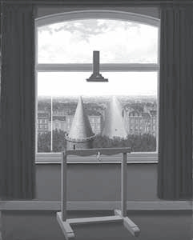

1809年1月，正当3岁的神童哈密尔顿能够阅读英文，会做算术，准备学习拉丁文、希腊文和希伯莱文，刚满6岁的J.鲍耶和阿贝尔初显数学才华时，一个叫埃德加·爱伦·坡的美国男孩出生在大西洋对岸的波士顿。那时，美国这个新移民国家尚未出现一位数学家，却已诞生了好几位诗人，比如爱默生（R.W.Emerson，1803—1882）和朗费罗（H.W.Longfellow，1807—1882）。爱伦·坡的双亲都是演员，父亲嗜酒好赌，在爱伦·坡出生后便离家出走，并一去不返，母亲不久也辞别人世。不到3岁，爱伦·坡就成了一个孤儿，被弗吉尼亚的一位无子嗣的商人爱伦收养（因而他才拥有双姓）。这一点与哈密尔顿倒是有些相似，因为后者也是从小就被寄养在叔叔家里。

现代主义文学之父爱伦·坡
6岁那年，爱伦·坡随爱伦夫妇返回英国老家，在那里读了4年小学。回到弗吉尼亚以后，爱伦·坡并不感到幸福，因为他的养父母经常吵架。在学校里，爱伦·坡的功课不差，但却爱上了他的一位同学的母亲。按照爱伦·坡的说法，是她激发了他的灵感，让他写出了《致海伦》。
海伦，你的美貌对于我，
像古代奈西亚的那些帆船，
在芬芳的海上悠然浮起，
把劳困而倦游的浪子载还，
回到他故国的港湾。
这首诗并非爱伦·坡的顶尖作品，但却表现了他后来诗歌的主题：寻求由美丽女性体现的那种理想。不仅如此，在《写作的哲学》一文中他写道：
我问自己，“根据我们对于人类的普遍认识，在忧伤的题材中，哪一种最忧伤呢？”答案自然是死亡。“那么，”我说，“在什么情况下，这种最忧伤的题材最富有诗意呢？”答案是，“当死亡和美结成最亲密的联盟时。”也就是说，一个漂亮女人的死，毫无疑问，是世上最富有诗意的题材。
这个想法虽然是20世纪许多电影导演和制片人遵循的原则，可是在19世纪20年代，它似乎显得太超前了。
拿仅仅早爱伦·坡几年出生的美国诗人爱默生和朗费罗来比较，前者的超验主义思想虽然有些消极，但却是一种积极的消极，他自始至终实践着自己的一条基本准则，“忠实于自己”；后者作为叙事长诗的代表诗人，虽说当年轰动一时，他的名字被用来命名流经波士顿的查尔斯河上的一座桥，却被认为表达了某种对神话与“美”的传统世界的向往，每每被后来的批评家们贬低成一位唱流行歌曲，讲浪漫故事的伤感的道德家。
在爱伦·坡看来，一方面，爱默生和超验主义者永远也写不出好诗，因为他们局限于积极意义上的逆来顺受思想。另一方面，长诗是不存在的（他主张一首好诗不应该超过50行），诗歌也不是用来培养道德情操或有节奏地讲述故事的工具。他固执的想法是，真正的艺术作品应该独立存在。36岁那年，他的代表作《乌鸦》问世，让他一举成名。这首诗集中体现了他的象征主义诗歌美学，即通过创造神圣美去追求快乐和愉悦。诗中大量运用乌鸦、雕像、门房等各种意象表达哀思之情，从而揭示“美妇之死”这一神圣美的主题。可是不幸的是，爱伦·坡对朗费罗的攻击，使他成为大众的笑料，也损害了他日益增长的名誉、地位，以及他的健康。

印象主义画家马奈为《乌鸦》所作的插画
在爱伦·坡17岁那年，他爱上了一个叫萨拉的姑娘，这一次他的爱情有了回报。但在他进入弗吉尼亚大学后，萨拉的父母出面干涉，结果她嫁给了别人。20世纪90年代，作者访问弗吉尼亚大学期间了解到，爱伦·坡在该校读了11个月的书便退学了（后来在西点军校也未完成学业），不知是因为失恋，还是因为行为不检。不过，校方保留了他当年的宿舍（13号）作为永久的纪念。爱伦·坡39岁时，萨拉的丈夫去世，但她再次拒绝了他的求婚。第二年，爱伦·坡在巴尔的摩街头突然晕倒，被送到医院后不治身亡。
爱伦·坡去世后，他的诗歌、短篇小说（他被视为侦探小说的鼻祖）和文学评论在法国产生了巨大影响，波德莱尔和马拉美等诗人都对他推崇备至，这不由地让我们想起与他同时代的数学家阿贝尔、J.鲍耶和伽罗华的命运和遭遇。不同的是，数学是发现，而诗歌是创造。对诗人们来说，一代人要推倒另一代人所构筑的东西，一个人所树立的东西另一个人要摧毁它。而对数学家们来说，每一代人都会在旧建筑上再建一层楼。这大概就是为何诗人中间有许多人也是批评家，而数学家最不愿看到的就是“撞车”和优先权之争。
1821年春，即爱伦·坡和他的养父母从英伦返回北美的第二年，夏尔·波德莱尔出生在巴黎，那时爱伦·坡或许正趴在课桌上给同学的漂亮母亲写情诗，而阿贝尔正在奥斯陆上大学。当时老波德莱尔已经62岁了，他虽然出生在农村，却家境富裕，受过良好的教育，担任过中学教师和公爵府的家庭教师。他还爱好文学和艺术，擅长画画，在法国大革命和拿破仑执政时期在上议院工作过，或许与柯西的父亲是同事，并与拉格朗日和拉普拉斯相识。
波德莱尔的母亲出身官宦之家，在波旁王朝时期不得不逃往英国。她出生在伦敦，21岁那年才回到巴黎，寄住在亲戚家里。5年以后，没有嫁妆的她嫁给了老波德莱尔。不料，波德莱尔刚刚6岁，他的父亲就去世了，老波德莱尔生前曾悉心教儿子欣赏线条和形式美。不过，据法国哲学家、作家萨特（J.P.Sartre，1905—1980）分析，让波德莱尔深深迷恋的母亲才是他一生创作的动力，他内心的裂痕始于母亲的改嫁。他的继父是一位上校营长，波德莱尔随母亲嫁过去，但并没有改变或增加姓氏。随着继父的不断升迁（直至将军、大使、议员），他的生活和教育都有了保障，但却逐渐养成了忧郁、孤独和叛逆的性格。
15岁那年，波德莱尔开始读雨果（V.Hugo，1802—1885）、圣伯夫（Sainte-Beuve，1804—1869）、戈蒂耶（T.Gautier，1811—1872）等法国诗人和批评家的作品，后者率先提出“为艺术而艺术”（l’art pour l’art）。波德莱尔向他们学习写诗，可是并没有像爱伦·坡那样对前辈百般挑剔。第二年，他便在中学的优等生会考中获拉丁文诗作二等奖。19岁时，波德莱尔结识了妓女萨拉（与爱伦·坡的恋人同名），为她写了许多诗，并过上了放荡的生活。继父因此决定，让波德莱尔的一位船长朋友带波德莱尔去印度旅行。那是在1841年的夏天，中国正在经历鸦片战争，波德莱尔搭乘“南海号”由波尔多前往加尔各答。

青年波德莱尔像。库尔贝作
过了非洲南端的好望角之后，“南海号”并没有直接穿越莫桑比克海峡，而是从东边绕过了非洲最大的岛屿——马达加斯加，径直前往印度洋上的岛国毛里求斯。波德莱尔并没有享受到旅行者的快乐，而是把它看作一次流放，这从他写于海上的那首著名的诗歌《信天翁》中可以看出诗人不为世人理解的那种孤独感。诗的结尾是这样写的：
云霄里的王者，诗人也跟你相同，
你出没于暴风雨中，嘲笑弓手；
一被放逐到地上，陷于嘲骂声中，
巨人似的翅膀反倒妨碍行走。
这首深得诗人和艺术家喜爱的诗歌竟然出自一位20岁的年青人之手，不由地让人惊叹。“南海号”在毛里求斯的首都路易港整修三周以后，又前往附近的法属海外省留尼旺岛，波德莱尔在那里徘徊了26天，最后毅然决然地改乘其他船只回国。虽然这个决定可能让21世纪的那些年轻的背包族感到惋惜，但波德莱尔却下定决心要成为一名诗人，因而迫不及待地返回了自己的祖国。
回到巴黎两个月后，年满21岁的波德莱尔继承了父亲死后留下的大笔遗产。接下来的6年时间里，他仍像从前一样过着放荡不羁的生活，继父只得委托公证人管理波德莱尔的财产，每月只允许他支取200法郎。27岁那年，波德莱尔读到爱伦·坡的作品（其时距爱伦·坡的生命结束尚有一年），以后的17年间，他一直是爱伦·坡的诗歌和小说的忠实翻译者。爱伦·坡对波德莱尔的影响可从后者写的《再论埃德加·爱伦·坡》一文中看出：
在他看来，想象力乃是拥有种种才能的女王……但想象力不是幻想力……想象力也不同于感受力。想象力在哲学的方法范围之外，它首先觉察到事物深处秘密的关系、感应的关系和类似的关系，是一种近乎神的能力。
1857年，即黎曼把拓扑学引入复变函数论的那一年，波德莱尔的诗集《恶之花》出版了。上市不到20天，同龄的小说家福楼拜（G.Flaubert，1821—1880，一年前出版《包法利夫人》同样引起了非议和诉讼）就给波德莱尔写了一封充满赞美之词的信。但这本诗集却被法院判决为“有伤风化，有碍公众道德”，作者和出版社因此被处以罚款，其中的6首诗直到1949年才被解禁。尽管这个判决让当时的波德莱尔声名狼藉，但也使他一举成名。随着时间的推移，波德莱尔被公认为法国象征主义诗歌的鼻祖和现代主义诗歌的先驱。
在为《恶之花》修订版所写的序言中，波德莱尔写道：“什么叫诗？什么叫诗的目的？那就是要把善与美区别开来，发掘恶中之美。”他还说过：“我觉得，从恶中提取美，对我来说是一件愉快的事。而且难度越大，越是快乐。”波德莱尔所说的美，当然并非指形式的美，而是指内在的美。他的诗歌表达了现代人的忧郁和苦恼，他的现代性表现在他的诗歌内容，而不是形式上。波德莱尔开创了一个诗歌的新时代，他用最适合表现内心隐秘和真实情感的艺术手法，独特而充分地展现了自己的思想和精神境界。
从下面4行诗句（被20世纪的大诗人艾略特称赞并引用过）中我们可以看出，波德莱尔是如何从当代生活中提取新鲜的意象材料的。
在市郊的一处废弃地，污迹斑斑的迷宫里，
人们像发酵的酵母，不停地蠕动着，
只见一个年老的拾荒者走来，摇摇头，
绊了一下，向墙上撞去，像一个诗人。
这里面有某种普遍性的东西，这种写法无疑给诗歌增加了新的可能性。事实上，我们可以从艾略特（T.S.Eliot，1888—1965）的诗歌里发现这一点，例如，他有一首10行的短诗《窗前的早晨》，“从街道的尽头，棕色的雾的浮波/把形形色色扭曲的脸抛给了我”。
波德莱尔有一句名言：“你给我泥土，我能把它变成黄金。”这让我想起数学家J.鲍耶在创立非欧几何学之后说的那句话：“从虚无中，我开创了一个新的世界。”波德莱尔把《恶之花》献给批评家圣伯夫，后者在为波德莱尔所写的辩护书中这样说道：“诗的领域全被占领了。拉马丁取走了‘天国’，雨果取走了‘人间’，不，比‘人间’还多。维尼取走了‘森林’，缪塞取走了‘热情和令人眼花缭乱的盛宴’，其他人取走了‘家庭’‘田园生活’……还留下什么可供波德莱尔选择呢？”

英国诗人艾略特

波德莱尔之墓。作者摄于巴黎
一方面，诗歌的现代性或现代主义的开启与现代数学，尤其是非欧几何学是多么相似。由于欧几里得几何在诞生以后的2000多年里一统天下，难怪高斯、J.鲍耶、罗巴切夫斯基、黎曼等数学家要开创新的世界。另一方面，正如数学上的这一革新推动了后来的理论物理学和空间观念的更新，波德莱尔的诗歌也影响了后来的象征主义诗人，如马拉美（S.Mallarmé，1842—1898）、魏尔伦（P.Verlaine，1844—1896）和兰波（A.Rimbaud，1854—1891），同时通过莫罗（G.Morean，1826—1898，马蒂斯和鲁奥的老师）和罗普斯（F.Rops，1833—1898，比利时象征主义画家）的绘画，通过罗丹（A.Rodin，1840—1917）的雕塑，影响其他艺术门类。艾略特不仅获得了1948年的诺贝尔文学奖，更在21世纪BBC（英国广播公司）的一次公众调查中，被英国读者评选为所有年代中最受欢迎的英国诗人。
模仿就是仿照某种现成的样子去做。亚里士多德认为模仿是艺术的起源之一，也是人和其他动物的区别之一。他指出，人对于模仿的作品总是有快感，经验证明了这一点。有些事物看上去尽管会激发痛感，但惟妙惟肖的图像也能激发我们的快感，例如尸体，其原因在于求知对我们而言是快乐的事。我们一边看，一边求知，断定一个事物是另一个事物。在现代艺术诞生以前，一切创作实践都离不开模仿。换言之，模仿是对人的普遍经验的仿制，所不同的是这些仿制的技法和对象在不断更新。
举例来说，绘画的问题是如何把空间中的物体表现在平面上，古埃及最早的壁画之一《水边的狩猎》就是利用截面在平面上的投影，看主要人物的头和肩的位置描绘出来的，这是最初的方法。15世纪初，没影点的出现成为绘画史上的转折点。之后，直线透视法和空气透视法统治欧洲长达4个世纪。直到19世纪末，画家们依然喜欢诸如以黑暗表现阴影，以弯曲的树木和飘动的头发表现风吹，以及以不稳定的姿态表现身体的运动等手法。即使是印象派画家，也至多打乱现象的轮廓，将其巧妙地融合在色彩的变幻之中，但它仍然是一种对现实的再现。
从题材上看，古典主义明显地倾向于古代，而浪漫主义则倾向于中世纪或富有异国情调的东方。比如文学，无论是现实主义还是浪漫主义，都摆脱不开对人类生活经验的仿制。就像苏格兰作家沃尔特·司各特（W.Scott，1771—1832）在评价英格兰女作家简·奥斯汀（J.Austen，1775—1817）的小说《爱玛》时指出的，那种同自然本身一样模仿自然的艺术，它向读者显示的不是想象中的世界的壮丽景观，而是他们日常生活的准确惊人的再现。
可是，模仿有其天然的局限性。帕斯卡尔在《思想录》里谈到，两张相像的面孔，其中的每一张都不会使人发笑，但放在一起却会由于它们的相像而使人发笑。由此可见，模仿是比较低级的艺术创作形式。而美的感受要求有层出不穷的新形式，对于现代艺术家来说，通过对共同经验的描绘直接与大众对话已经是一件十分不好意思的事情了。这就迫使我们把模仿引向它的高级形式——机智。如同法国诗人阿波利奈尔（G.Apollinaire，1880—1918）所说的，“当人想要模仿行走的时候，他创造了和腿并不相像的轮子。”

毕加索的雕塑《公牛头》

诗人阿波利奈尔纪念邮票
机智在于事物间相似之处的迅速联想。意想不到的正确构成机智，机智是人类智力发展到高级阶段的产物。西班牙哲学家桑塔耶纳（G.Santayana，1863—1952）认为，机智的特征在于深入到事物的隐蔽的深处，从那里拣出显著的情况或关系，只要注意到这种情况或关系，整个对象就会在一种新的更清楚的状态下出现。机智的魅力就在于此，它是经过一番思索才获得的事物体验。机智是一种高级的心智过程，它通过想象的快感，容易产生诸如“迷人的”“才情焕发的”“富有灵感的”等效果。美国美学家苏珊·朗格（S.Langer，1895—1982）指出，每当情感由一种间接的方式传达出来的时候，就标志着艺术表现上升到了一个新的高度。

夏加尔作品《生日》

马格里特作品《欧几里得漫步处》
1943年，西班牙画家毕加索（P.Picasso，1881—1973）把自行车的坐椅竖起来，倒装上车把，俨然变成了一只“公牛头”。我年轻时看过法国画家夏加尔（M.Chagall，1887—1985）的一幅关于“提琴和少女”的画作，画面中的提琴倒置在地上，琴箱和少女的臀部融为一体。还有比利时超现实主义画家马格里特（R.Magritte，1898—1967）的一些作品，如《欧几里得漫步处》（1955），描绘的是一幅透过窗户看到的城市风景，画中有一条强烈透视变形的笔直大街，看上去重复了相邻塔楼的圆锥体形状。